Code
here::i_am("03-protein_protein_interactions.qmd")here() starts at /home/mateusharrington/Documents/git_work/EBI-workshop---Extracting-information-from-omics-datahere::i_am("03-protein_protein_interactions.qmd")here() starts at /home/mateusharrington/Documents/git_work/EBI-workshop---Extracting-information-from-omics-datalibrary(igraph)
library(stringr)
library(DT)
library(parallel)
library(assertthat)
library(biomaRt)
library(dplyr)
library(purrr)
library(furrr)
library(clusterProfiler)
library(org.Hs.eg.db)
library(future)
library(enrichplot)
library(patchwork)
library(ggplot2)
library(readr)Credit to Jimena for these functions, and indeed the basis for almost all the subsequent code!
# Rescale data to range 0 to 1.
rescale01 <- function(numvect){
rango <- range(numvect)
rescalado <- unlist(lapply(numvect, function(x) if((x - rango[1]) == 0) { 0 } else {(x - rango[1]) / (rango[2] - rango[1])}))
return(rescalado)
}
similar_gene_list <- function(gene_list, attr_matrix, rango = 100){
# attr_matrix must have at least a column with ensembl_gene_id and the rownames ordered by the attribute
d_gl <- as.numeric(rownames(attr_matrix)[attr_matrix$ensembl_gene_id %in% gene_list])
# Random sample of genes (most with a similar attribute)
rango2 <- setdiff(seq(-rango/2, rango/2, 1), 0)
rnd_ind <- sample(rango2, size = length(gene_list), replace = TRUE)
rnd_ind <- d_gl + rnd_ind
# check the extremes (all should be within the range of D)
if(length(which(rnd_ind < 1)) > 0) {
rnd_ind[which(rnd_ind < 1)] <- sample(1:rango, 1)
}
if(length(which(rnd_ind > nrow(attr_matrix)))){
rnd_ind[which(rnd_ind > nrow(attr_matrix))] <- sample(nrow(attr_matrix):(nrow(attr_matrix) - rango), 1)
}
# remove duplicates and replace with random genes (to keep gene number constant)
if(length(rnd_ind) != length(unique(rnd_ind))){
rnd_ind <- unique(rnd_ind)
rnd_ind <- c(rnd_ind, sample(setdiff(1:nrow(attr_matrix), rnd_ind), size = (length(gene_list) - length(rnd_ind))))
}
rnd_smpl <- as.character(attr_matrix$ensembl_gene_id[rnd_ind])
return(rnd_smpl)
}
# Divide genes according to an attribute #
attribute_2_list20bins <- function(attr_matrix, gene_col = 1, attr_col = 2, do_log = TRUE){
if(do_log == TRUE){
at <- rescale01(log(attr_matrix[, attr_col] + 1))
} else{
at <- rescale01(attr_matrix[, attr_col])
}
bines <- seq(0, 1, .05)
gps <- list()
for(k in c(1:(length(bines) - 1))){
if(k == 1){
gps[[k]] <- as.character(union(attr_matrix[which(at <= bines[k]), gene_col],
attr_matrix[which(at < bines[k + 1]), gene_col]))
} else {
if(k == 20){
gps[[k]] <- as.character(intersect(attr_matrix[which(at >= bines[k]), gene_col],
attr_matrix[which(at <= bines[k + 1]), gene_col]))
} else {
gps[[k]] <- as.character(intersect(attr_matrix[which(at >= bines[k]), gene_col],
attr_matrix[which(at < bines[k + 1]), gene_col]))
}
}
}
return(gps)
}# read data
# Get DESeq2 results
res <- readr::read_tsv(here::here("data/ppi/differential_genes.tsv")) |>
na.omit()Filter to significant genes
# Filter to sig genes
res_sig <- res |>
dplyr::filter(min_padj < 0.05)
# Assert that there are no NAs in ensembl IDs
assertthat::are_equal(sum(is.na(res_sig$gene)), 0)[1] TRUENote the use of the assertthat package here! This package effectively just throws an error if the boolean given to it isn’t true.
The purpose of this is similar to the idea of unit tests in software development, whereby tests are written into code/into automated checks run against the code to ensure it works as expected. It’s effectively a more defensive coding strategy.
For data analysis it’s nice to explicitly state what we expect to be true of our data at a given stage of the analysis. Perhaps you already have a habit of running little bits of code in the console to check that things look the way you expect them to?
In this particular case, we don’t want any missing ensembl IDs for our downstream analysis as this would cause errors. We could do nothing here and wait to encounter an error later, but it’s better to state that it should be true, and deliberately invoke the error here if it isn’t. This makes it immediately obvious what the issue is and we can debug, instead of having to backtrack through later code to try and locate the issue.
We want a background list of genes to be able to test if our contrasts have more interacting proteins than we would expect by chance. Here we’ll use the full list of genes we have in these samples.
background_population <- readr::read_lines(here::here("data/ppi/background_genes.txt"))
assertthat::assert_that(sum(duplicated(background_population)) == 0)[1] TRUEOur protein-protein-interaction network is human so let’s convert our ensembl IDs from mouse to human.
Once again biomart isn’t playing ball so let’s use the same manual download again.
ensembl <- useEnsembl(biomart="ensembl", dataset="hsapiens_gene_ensembl")
mouse <- useEnsembl(biomart="ensembl", dataset="mmusculus_gene_ensembl")
human_genes <- getLDS(attributes = c("ensembl_gene_id"),
filters = "ensembl_gene_id",
values = res_sig$gene,
mart = mouse,
attributesL = c("hsapiens_homolog_ensembl_gene"),
martL = ensembl)mouse_ids <- readr::read_tsv(here::here("data/mouse_mart_export.txt")) |>
janitor::clean_names()Rows: 63042 Columns: 2
── Column specification ────────────────────────────────────────────────────────
Delimiter: "\t"
chr (2): Gene stable ID, Human gene stable ID
ℹ Use `spec()` to retrieve the full column specification for this data.
ℹ Specify the column types or set `show_col_types = FALSE` to quiet this message.df <- res_sig |>
dplyr::left_join(mouse_ids, by = join_by(gene == gene_stable_id),
relationship = "many-to-many") |>
# Keep only one instance of duplicates
dplyr::filter(
!duplicated(human_gene_stable_id) |
duplicated(human_gene_stable_id, fromLast = TRUE)
)
# Convert background
human_background <-
mouse_ids[mouse_ids$gene_stable_id %in% background_population,]$human_gene_stable_id |>
unique()
human_background <- human_background[!is.na(human_background)]We also want gene length data since larger genes would theoretically have more domains and therefore more potential interactions, so by getting the gene length we can try to account for this in our analysis.
This next chunk can take a little while to run so I’ll leave the eval as false and feel free to just skip running it and use the saved data.
# Note that it can take a while to download the gene lists, so I've set eval
# to false for this chunk.
ensembl = useEnsembl(biomart="ensembl")
human <- useDataset("hsapiens_gene_ensembl", mart = ensembl)
# CDS length #
cds <- getBM(attributes = c("ensembl_gene_id", "cds_length"),
mart = mouse)
colnames(cds) <- c("ensembl_gene_id", "cds_length")
cds <- cds[-which(is.na(cds$cds_length)== TRUE), ]
cds <- cds[order(cds$ensembl_gene_id), ]
cds_max <- aggregate.data.frame(cds, by = list(cds$ensembl_gene_id), FUN = max)
cds_max <- cds_max[, c("ensembl_gene_id", "cds_length")]
cds_max <- cds_max[cds_max$ensembl_gene_id %in% human_background, ]
write.table(cds_max, here::here("data/ppi/EnsemblGeneID_MaxCDSlength.txt"),
sep = "\t", quote = FALSE, row.names = FALSE, col.names = FALSE)So let’s try this for each of our contrasts separately.
There’s also a choice to be made here. We can either use the whole protein-protein interaction network, which is much bigger as it includes lots of inferred interactions, or we can subset our network to just those with known physical interactions. You’re more likely to find something if you use the whole network, but it’s also more possible that the interactions might not be real.
How would you approach this trade-off?
# Get dfs separated by contrast
gene_list <- df |>
dplyr::group_by(condition) |>
tidyr::nest()
# # # SELECT YOUR NETWORK FILE # # #
# Read the file into a dataframe
# The physical interactions only
ppi_data <- read.table(here::here("data/ppi/MergedPPI_2024Feb_PIO_STRING.txt"),
header = FALSE, as.is = TRUE)
# The full network including inferred interactions
# ppi_data <- read.table(here::here("data/ppi/MergedPPI_2024Feb.txt"),
# header = FALSE, as.is = TRUE)
# Create an igraph object from the dataframe
my_network <- graph_from_data_frame(ppi_data, directed = FALSE)
rm(ppi_data)
# Check the graph
summary(my_network)IGRAPH 39b6159 UN-- 22651 1496213 --
+ attr: name (v/c)edge_attr(my_network, "weight", index = E(my_network)) <- 1# # # INPUT gene attributes # # #
# Gene length / max CDS length
gene_length <- read.table(here::here("data/ppi/EnsemblGeneID_MaxCDSlength.txt"),
sep = "\t", header = FALSE,
stringsAsFactors = FALSE)
colnames(gene_length) <- c("ensembl_gene_id", "gene_length")
# # # SETUP NUMBER OF RANDOM SAMPLES to create your NULL # # #
m <- 10000
# # # Set to "D" to take into account degree,
# # # "GL" to taken into account Gene length,
# # # or "B" to take into account both degree and Gene length
gene_attribute <- "B"
# # # CHANGE the name of your OUTPUT FILE that will contain your test against NULL # # #
output_file <-
here::here(
"data/ppi",
"PPI_Test1"
)
# Output Louvain clusters
output_file2 <-
here::here(
"data/ppi",
"PPI_Test1-Louvain_")Here we set the minimum number of genes for clustering. Change this number to something other than 5 (I’d suggest a higher number)!
# Min number of genes for a cluster
min_cluster_size <- 5# Add test type to the output file name
if(gene_attribute == "D") {
output_file <- paste(output_file, "MatchDegree", sep = "_")} else {
if(gene_attribute == "GL") {
output_file <- paste(output_file, "MatchGenelength", sep = "_")} else {
if(gene_attribute == "B"){
output_file <- paste(output_file, "MatchDegreeAndGenelength", sep = "_")
}
}
}
# Pull out the ensembl list for each contrast
my_gene_list <- map(gene_list$data, ~ dplyr::pull(.x, human_gene_stable_id)) |>
purrr::set_names(gene_list$condition)process_network <- function(background) {
# Reduce my network to background population of genes tested #
Gbg <- vertex_attr(my_network)$name
BG <- intersect(background, intersect(Gbg, gene_length$ensembl_gene_id))
my_network <- induced_subgraph(graph = my_network, vids = BG)
# Create tables with the GENE attributes provided for the background population found in my network #
# Calculate and order genes according to their degree in my network #
D <- igraph::degree(my_network, mode = "all")
D <- data.frame(ensembl_gene_id = names(D), degree = D)
D <- D[order(D$degree, decreasing = TRUE),]
rownames(D) <- 1:nrow(D)
# Order genes by Gene length #
gene_length <- gene_length[gene_length$ensembl_gene_id %in% BG, ]
gene_length <- gene_length[order(gene_length$gene_length, decreasing = TRUE), ]
rownames(gene_length) <- 1:nrow(gene_length)
# Combined score Degree and Gene length
B <- merge(D, gene_length, by = "ensembl_gene_id")
B <- data.frame(B,
scaled_degree = rescale01(B$degree),
scaled_gene_length = rescale01(B$gene_length),
score = rescale01(B$degree) + rescale01(B$gene_length))
B <- B[order(B$score, decreasing = TRUE), ]
rownames(B) <- 1:nrow(gene_length)
# Report numbers
print(paste0("Background population: ", length(background), " genes"))
print(paste0("Genes in the network: ", length(Gbg), " genes"))
print(
paste0(
"Background population contained in the network and used for analysis: ",
length(BG),
" genes"
)
)
x <- map(my_gene_list, ~ length(intersect(.x, BG)))
x <- map2(x, names(my_gene_list), ~ print(paste0("Genes of interest contained in the network and used for analysis: ", .x, " for condition", .y)))
return(list("BG" = BG, "network" = my_network, "D" = D, "B" = B))
}
res <- process_network(human_background)[1] "Background population: 18649 genes"
[1] "Genes in the network: 22651 genes"
[1] "Background population contained in the network and used for analysis: 17040 genes"
[1] "Genes of interest contained in the network and used for analysis: 4110 for conditionBR"
[1] "Genes of interest contained in the network and used for analysis: 3505 for conditionLG"
[1] "Genes of interest contained in the network and used for analysis: 79 for conditionLV"Check total number of genes of interest
x <- map2(gene_list$condition, my_gene_list, ~ print(paste0("Genes of interest: ", length(.y), " for condition ", .x)))[1] "Genes of interest: 5249 for condition BR"
[1] "Genes of interest: 4535 for condition LG"
[1] "Genes of interest: 1107 for condition LV"rm(background_population)
# Function to intersect each cell type gene list with a single background list
intersect_with_background <- function(background_genes, cell_type_gene_list) {
map(cell_type_gene_list, ~ intersect(.x, y = background_genes))
}
my_gene_list <- intersect_with_background(res$BG, my_gene_list)# Define subnetwork
my_subgraph <-
map(my_gene_list, ~ induced_subgraph(graph = res$network, vids = .x))We can plot our networks at this stage, though the code can take a little while to run!
# Plot subnetwork
map2(my_subgraph, names(my_subgraph),
~ plot(
.x,
vertex.size = 3,
vertex.color = "darkslateblue",
vertex.frame.color = "darkslateblue",
edge.color = "grey",
rescale = TRUE,
vertex.label = NA,
main = paste0("Condition: ", .y)
)
)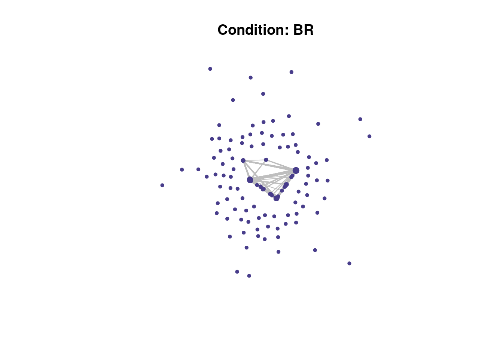
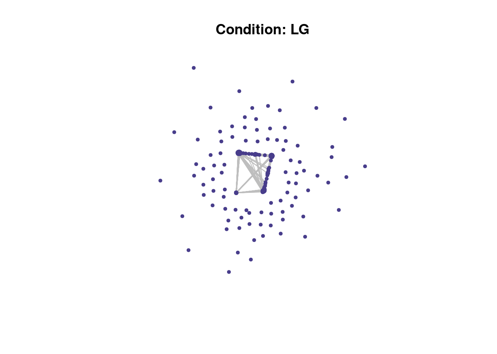
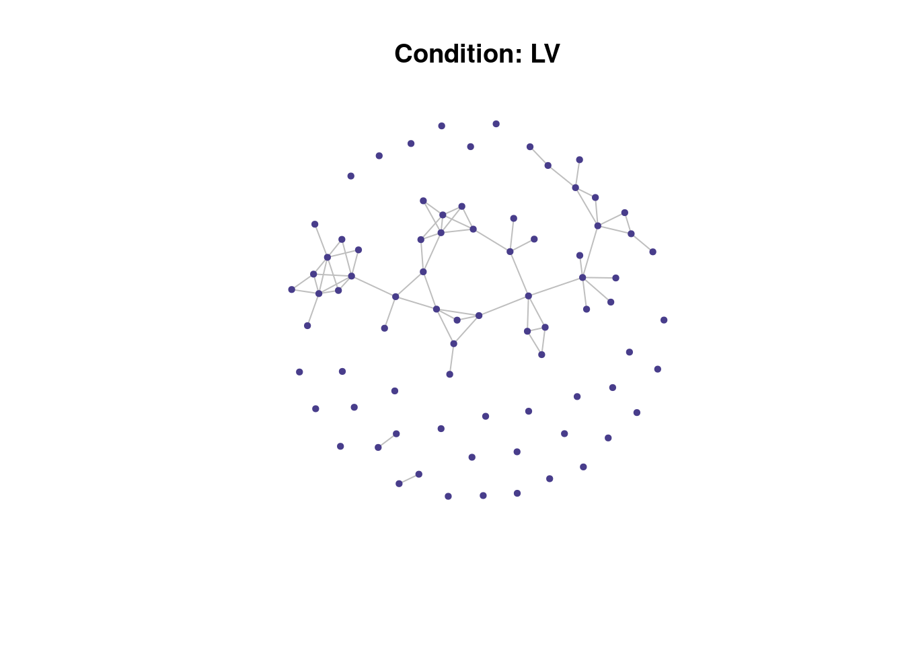
$BR
NULL
$LG
NULL
$LV
NULLperform_permutation <- function(gene_list, gene_list_name, my_network, BG, gene_attribute, m, num_cores = detectCores() - 1) {
print(paste0("Processing ", gene_list_name))
# Gene population of interest
gene_list_A <- intersect(gene_list, BG)
# Sum of the edges within gene list A
mynet_gl <- induced_subgraph(my_network, vids = gene_list_A)
w_mynet_gl <- edge.attributes(mynet_gl)$weight
o <- sum(w_mynet_gl)
# Sum of the edges from within a random gene list size A
# Use mclapply to parallelize the replicate function
e <- mclapply(1:m, function(i) {
rnd_smpl <- similar_gene_list(gene_list = gene_list_A, attr_matrix = gene_attribute, rango = 100)
rnd_mynet_gl <- induced_subgraph(my_network, vids = rnd_smpl)
rnd_w_mynet_gl <- edge.attributes(rnd_mynet_gl)$weight
sum(rnd_w_mynet_gl)
}, mc.cores = num_cores)
# Convert the list to a vector
e <- unlist(e)
p <- length(which(e >= o)) / m
# Write to dataframe
df <- data.frame("gene_list" = gene_list_name, "o" = o, "e" = mean(e), "sem" = sd(e), "p" = p)
return(df)
print(paste0("Finished processing ", gene_list_name))
}
results <-
map2(
my_gene_list,
names(my_gene_list),
~ perform_permutation(
.x,
.y,
my_network = res$network,
BG = res$BG,
gene_attribute = res[[gene_attribute]],
m = m
)
) |>
list_rbind()[1] "Processing BR"
[1] "Processing LG"
[1] "Processing LV"readr::write_tsv(results, paste0(output_file, ".tsv"))
# Add adjusted pvalues
results$pval <- ifelse(results$p == 0, 1e-8, results$p)
results$padj <- p.adjust(results$pval, method = "bonferroni")
# Table with results of test
DT::datatable(
results,
caption = "Test if the number of interactions is higher than expected by chance",
rownames = FALSE
) %>% formatRound(columns = c("e", "sem", "padj"), digits = c(2))o observed number of interactions.
e expected number of interactions based on 10^{4} randomizations.
sem standard error of the mean based on 10^{4} randomizations.
p estimated p value based on 10^{4} randomizations.
Note If a weighted network is provided then it is a test for the sum of the edge’s weights.
perform_louvain_clustering <- function(subgraph, min_cluster_size, label) {
# Louvain clustering
cl <- cluster_louvain(subgraph)
# Determine clusters smaller than the minimum size
cluster_sizes <- table(cl$membership)
not_assigned <- names(cluster_sizes[cluster_sizes < min_cluster_size])
num_clusters <- names(cluster_sizes[cluster_sizes >= min_cluster_size])
# Colour assignment
cl_cols <- rainbow(n = length(num_clusters))
# Vectorized color assignment
cl_colors <- rep("grey", cl$vcount)
membership_to_color <- setNames(cl_cols, num_clusters)
cl_colors[cl$membership %in% num_clusters] <- membership_to_color[as.character(cl$membership[cl$membership %in% num_clusters])]
# Dataframe with clustering and colours
module_assignment <- data.frame(gene = cl$names,
module = cl$membership,
module_color = cl_colors,
label = label)
return(module_assignment)
}
module_assignment <-
map2(
my_subgraph,
names(my_subgraph),
~ perform_louvain_clustering(.x, min_cluster_size, .y)
)Have a look at the network plots below. Do you notice anything about them?
# Plot clustering
map2(my_subgraph, module_assignment, ~ plot(.x,
vertex.size = 3,
vertex.color = as.character(.y$module_color),
vertex.frame.color = .y$module_color,
edge.color = "grey",
rescale = TRUE,
vertex.label = NA,
main = paste0("Condition: ", .y$label[1])))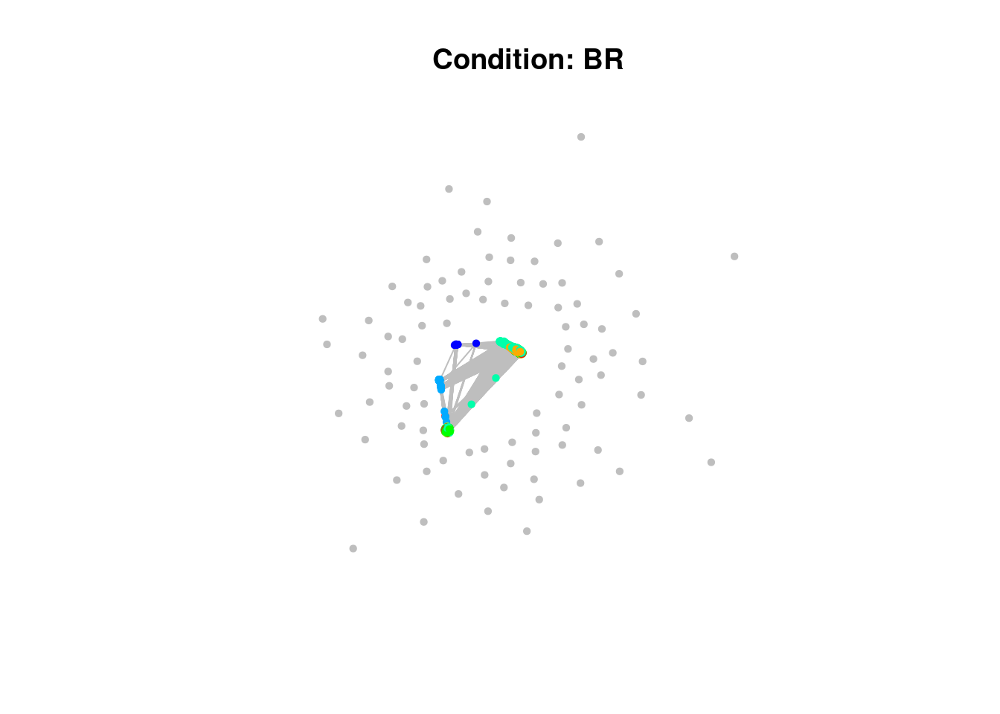
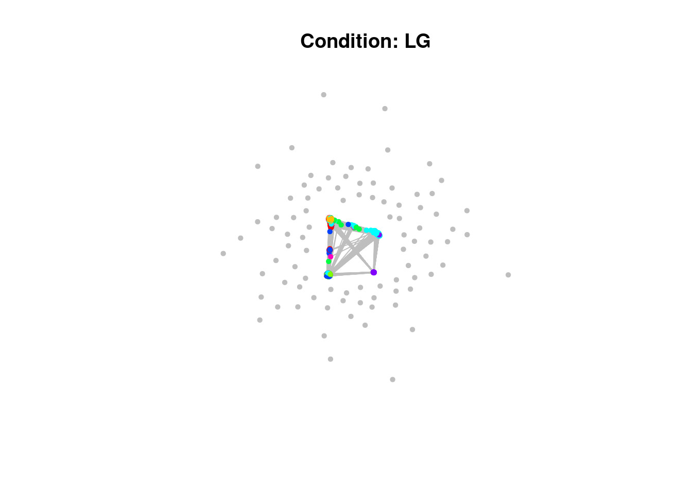
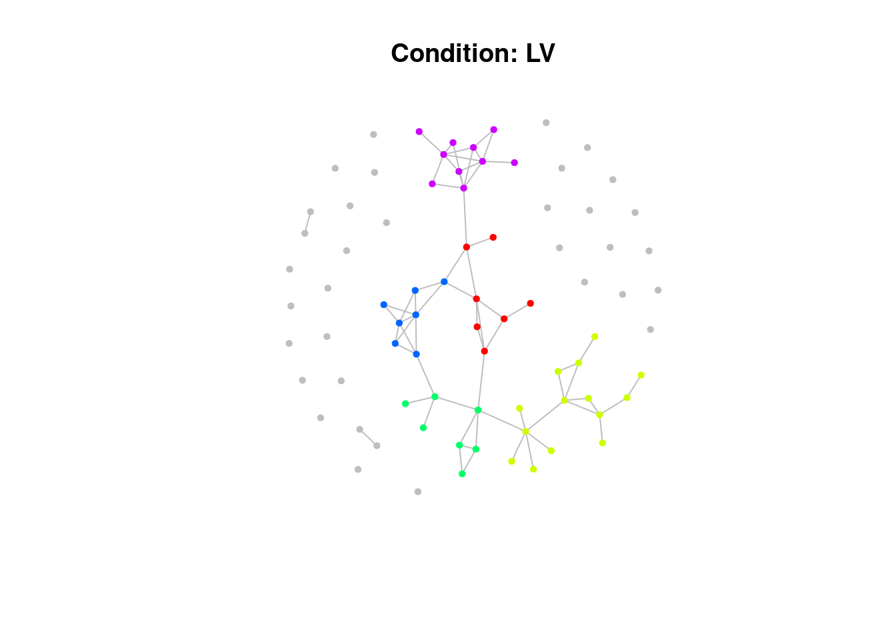
$BR
NULL
$LG
NULL
$LV
NULLoutput_file2 <- paste(output_file2, paste("MinSize"), min_cluster_size, sep = "")
# Save clustering as file
write.table(list_rbind(module_assignment),
file = output_file2,
col.names = FALSE,
row.names = FALSE,
quote = TRUE)Having assigned the genes to modules the next thing to do is choose which conditions to take forward to assign functions via GO pathways to.
# Get modules assignment
modules <- list_rbind(module_assignment)
# Get significant conditions
sig_conditions <- results |>
dplyr::filter(p < 0.05)For cases where the number of genes is small, there isn’t a need to use the clusters, though there isn’t a rule of thumb for a cutoff for this. In this case there aren’t any with a very low number, but let’s have some code for skipping clustering for conditions that have less than 30 genes.
# Get number of genes per conditions
gene_num <- map_dbl(my_gene_list, length)
# Check the gene numbers per conditions of interest
gene_num <- gene_num[names(gene_num) %in% sig_conditions$gene_list]
gene_num BR LG LV
4110 3505 79 # Get the conditions with fewer than 30 genes
conditions_with_few_genes <- names(gene_num)[gene_num < 30]modules_sig <- modules |>
# Filiter to sig conditions
dplyr::filter(label %in% sig_conditions$gene_list) |>
# Update modules for conditions with low number of genes to all be the same
dplyr::mutate(module_updated = case_when(
label %in% conditions_with_few_genes ~ 1,
.default = module
))gene_list <- modules_sig %>%
group_by(label, module) %>%
tidyr::nest()Here we want entrez IDs, and notice the use of tryCatch to allow R to continue through errors caused then the conversion fails.
It might be nice to add a little counter for the number of conversions that fail as well, give that a go if you fancy a challenge! Perhaps you could also return the gene IDs that failed to convert as well?
Also note the handy little trick of using file.exists to only run certain code that might take a while to run if the results of that computation haven’t already been generated.
convert_to_entrez <- function(gene_list) {
tryCatch({
bitr(gene_list, fromType = "ENSEMBL", toType = "ENTREZID", OrgDb = org.Hs.eg.db)
}, error = function(e) {
message("An error occurred: ", e$message)
return(NULL) # Return NULL if the conversion fails
})
}
# Convert Ensembl IDs to Entrez IDs
gene_list_entrez <- map(gene_list$data, ~ {
tryCatch({
bitr(.x$gene, fromType = "ENSEMBL", toType = "ENTREZID", OrgDb = org.Hs.eg.db)
}, error = function(e) {
message("An error occurred: ", e$message)
return(NULL) # Return NULL if the conversion fails
})
})
# Filter out any NULL entries if there were conversion errors
gene_list_entrez <- map(gene_list_entrez, ~ .x |>
# remove any missing data
dplyr::filter(!is.na(ENTREZID)) |>
dplyr::pull(ENTREZID))
entrez_background <- convert_to_entrez(gene_ensembl_ids$ensembl)
# Save file - it takes a while to compute
file <-
here::here(
"data/ppi/module_go_terms.rds"
)
if (!file.exists(file)) {
plan(multisession, workers = detectCores() - 1)
result_list <- future_map(
gene_list_entrez,
~ enrichGO(
gene = .x,
OrgDb = org.Hs.eg.db,
keyType = "ENTREZID",
# "BP" for biological process, "MF" for molecular function, "CC" for cellular component
ont = "ALL",
universe = entrez_background,
pAdjustMethod = "BH",
qvalueCutoff = 0.05,
readable = TRUE
), .options = furrr_options(seed = 123)
) |>
set_names(paste0(gene_list$label, "_module", gene_list$module))
readr::write_rds(result_list, file)
} else {
result_list <- readr::read_rds(file)
}
# Remove any NULL entries
result_list <- result_list[!sapply(result_list, is.null)]
# Assert that there are no nulls in list
assertthat::see_if(sum(map_lgl(result_list, is.null)) == 0)[1] TRUE# Filter the list to keep only elements where the 'result' slot has rows
result_list <- result_list[sapply(result_list, function(x) nrow(x@result) > 0)]Whilst we’ve got the entrez IDs handy we may as well save the lists to be run through MAGMA! Let’s exclude modules that only have one gene in them as well.
Have a think about why we might do this and write your thoughts below
# Save to MAGMA
names(gene_list_entrez) <- paste0(gene_list$label, "_module", gene_list$module)
# Exclude one gene modules
gene_list_entrez <- gene_list_entrez[map_dbl(gene_list$data, nrow) != 1]
names(gene_list_entrez) [1] "BR_module1" "BR_module2" "BR_module3" "BR_module4" "BR_module5"
[6] "BR_module6" "BR_module7" "BR_module9" "BR_module16" "LG_module1"
[11] "LG_module2" "LG_module3" "LG_module4" "LG_module5" "LG_module6"
[16] "LG_module7" "LG_module8" "LV_module1" "LV_module2" "LV_module3"
[21] "LV_module6" "LV_module9" "LV_module10" "LV_module11" "LV_module16"# Create a character vector where each element is a single string
lines_to_write <- sapply(names(gene_list_entrez), function(name) {
paste(name, paste(gene_list_entrez[[name]], collapse = " "))
}, USE.NAMES = FALSE)
# Write the character vector to a file
readr::write_lines(lines_to_write,
here::here("data/ppi/ppi_sig_modules.magma.txt"))The enrichplot has a nice function to evaluate the similarity of GO terms as there’s a lot of redundancy and overlap in the terms. It also includes a nice treeplot function to visualise the terms based on their similarity.
# Plotting the first module's GO enrichment result as an example
if (length(result_list[[1]]) > 0) {
dotplot(result_list[[1]])
}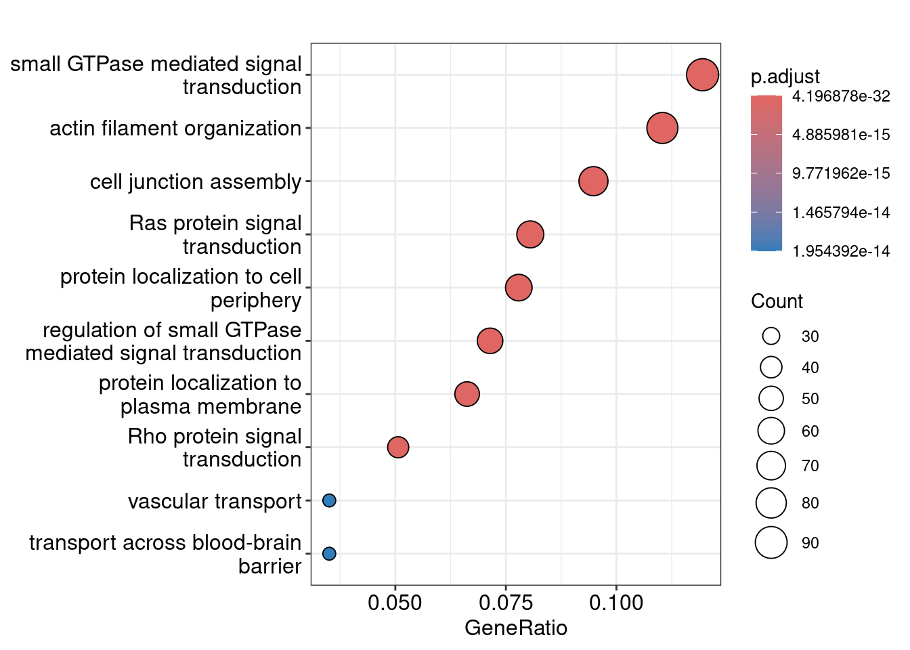
dotplot(result_list$BR_module1, split = "ONTOLOGY")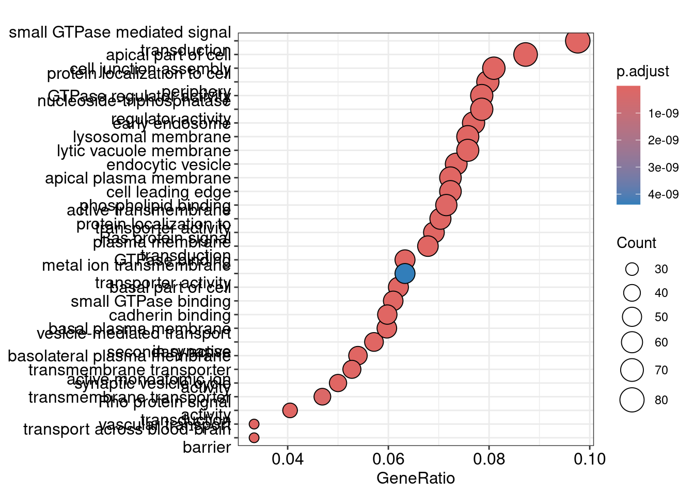
# Get semantic similarity of terms
result_list <- map(result_list, pairwise_termsim)
treeplot(result_list$BR_module2)
# Lots of the modules are just a single gene, it doesn't make sense to assign
# a GO term to them, one should probably just apply the gene name as a label
result_list_subset = result_list[sapply(result_list, function(x) length(x@gene) > 1)]
# Define a safe version of your treeplot function that returns NULL on error
safe_treeplot <- possibly(treeplot, otherwise = NULL)
# Use map with the safe version of the function
treeplots <- map(result_list_subset, safe_treeplot)
# Remove any NULL entries
treeplots <- treeplots[!sapply(treeplots, is.null)]
# Assert that there are no nulls in list
assertthat::see_if(sum(map_lgl(treeplots, is.null)) == 0)[1] TRUEtreeplots <- map2(treeplots, names(treeplots), ~ .x + ggtitle(.y))
# Make patchwork of plots per condition
# Extract unique cell types from the plot names
conditions <- unique(sub("_module.*", "", names(treeplots)))
# Split the list of plots into a nested list by condition
plots_by_condition <- map(conditions, ~{
plots_for_type <- treeplots[grepl(paste0("^", .x, "_module"), names(treeplots))]
combined_plot <- wrap_plots(plots_for_type, ncol = 1) # Adjust 'ncol' as needed
combined_plot
})
# Name the list of combined plots by condition
names(plots_by_condition) <- conditions
# save the plots nice and tall
walk2(plots_by_condition, names(plots_by_condition), ~ ggsave(
filename = here::here("data/ppi/", paste0(.y, "_combined_plot.png")),
plot = .x,
width = 14,
height = 38
))plots_by_condition$BR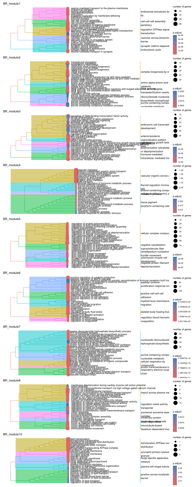
plots_by_condition$LG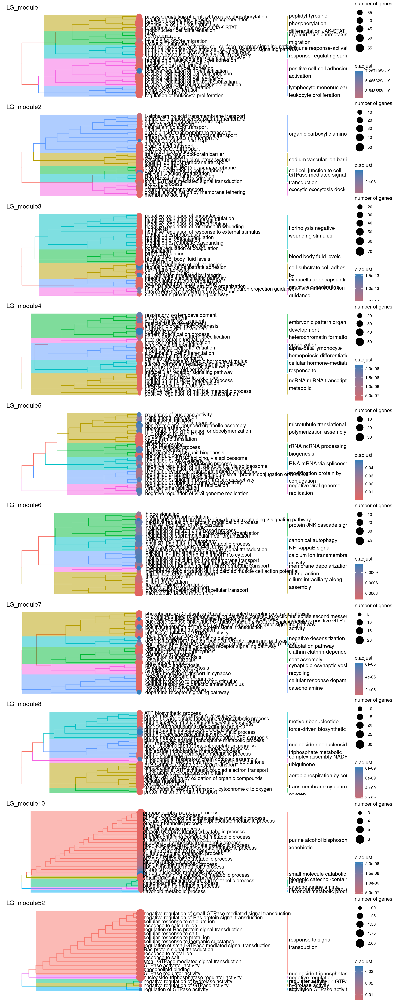
plots_by_condition$LV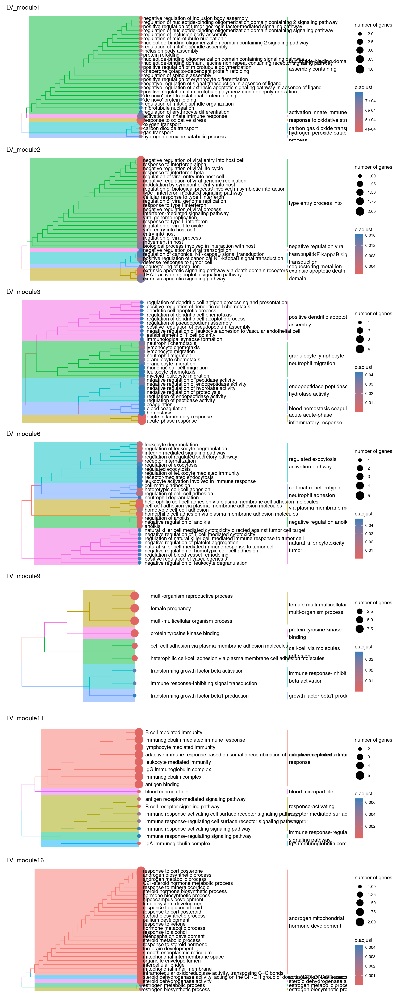
So there isn’t really a particularly scientific or mathematical solution to assigning module labels. So you just kind of eyeball the GO terms, hope you see a nice pattern of related terms highlighted and either pick one or create your own amalgamated term…
Have a go at picking a few labels for some modules! Maybe have a chat with your neighbours about which to assign. As a cheeky hint, maybe go have a look at the MAGMA heatmaps of the PPI modules to decide which ones you might like to label :P
# Make vector of module labels
module_assignments <-
c(# BR
"example_label",
# LV
"example_label",
# LG
"example_label")
# Get a vector of interim labels to use
# Comment this line out if you assign labels yourself!
module_assignments <- rep("example_label", length(names(treeplots)))
module_assignments <- tibble("module" = names(treeplots), "label" = module_assignments)Now let’s get the gene symbol for the modules with only one gene.
gene_num <- map_dbl(result_list, ~ length(.x@gene))
one_gene <- names(gene_num)[gene_num == 1]
genes <- map_chr(one_gene, ~ result_list[[.x]]@gene)
names(genes) <- one_gene
ensembl <- useMart("ensembl", dataset = "hsapiens_gene_ensembl")
# Retrieve gene symbols
gene_info <- getBM(attributes = c('entrezgene_id', 'hgnc_symbol'),
filters = 'entrezgene_id',
values = genes,
mart = ensembl)
# Print the results
head(gene_info) entrezgene_id hgnc_symbol
1 100131897 INSYN2B
2 100528062 ARMCX5-GPRASP2
3 100528062 GPRASP2
4 100653515 CEP295NL
5 10581 IFITM2
6 1066 CES1# Make sure there's no NAs in the conversion
assertthat::noNA(gene_info)[1] TRUE# Make sure genes are arranged in the same way
module_order <- names(genes)[match(gene_info$entrezgene_id, genes)]
gene_symbols <- gene_info$hgnc_symbol
names(gene_symbols) <- module_order
# Update labels in the dataframe
one_gene_labels <- tibble(module = names(gene_symbols), label = gene_symbols)And lastly we can combine our module labels and save them.
module_assignments <- rbind(module_assignments, one_gene_labels)
# Save module assignment
readr::write_csv(
module_assignments,
here::here(
"data/ppi/",
"ppi_sig_module_labels.csv"
)
)